◇例として、Chromeの設定を記述してあります。他のブラウザーをご使用の場合は、同様な設定をしてください。
【Chromeの場合】
◇Chromeを起動し、「 」をクリックして表示された一覧から「設定」をクリックします。
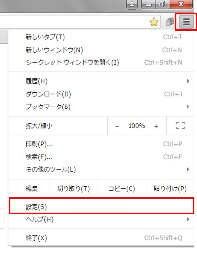
◇「設定」が表示されます。
スクロールし、最終行の「詳細設定を表示」をクリックします。
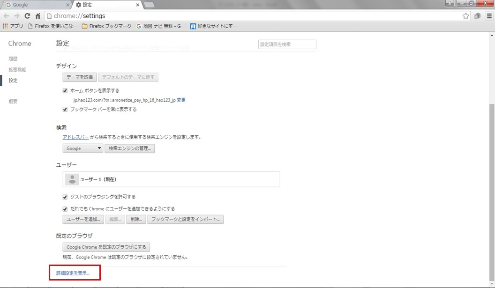
◇プライバシーの「コンテンツの設定」をクリックします。
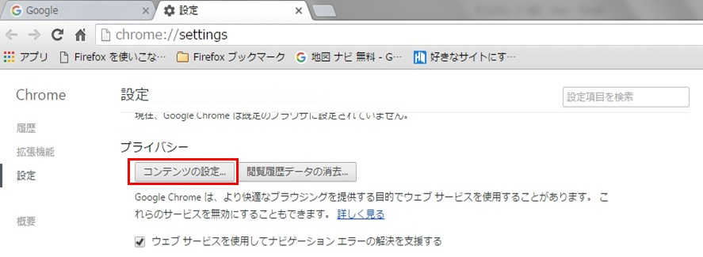
◇コンテンツの設定が表示されます。
ポップアップの「例外の管理」をクリックします。
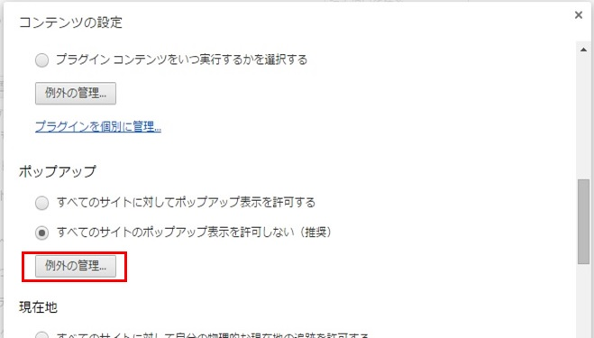
◇ポップアップの例外が表示されます。
ホスト名のパターンに https://172.16.0.125:8080 と入力し、動作を”許可”にし、「完了」をクリックします。

【Chromeの場合】
◇Chromを起動し、「 」をクリックして表示された一覧から「印刷」をクリックします。
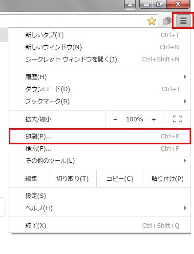
「印刷」が表示されます。
スクロールし、最終行の「詳細設定」をクリックします。
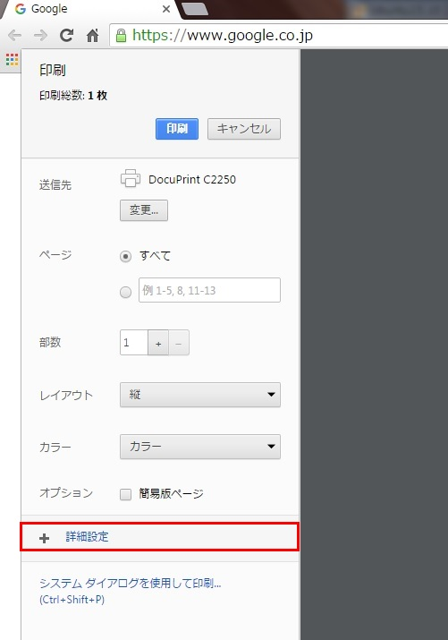
余白を「なし」にします。
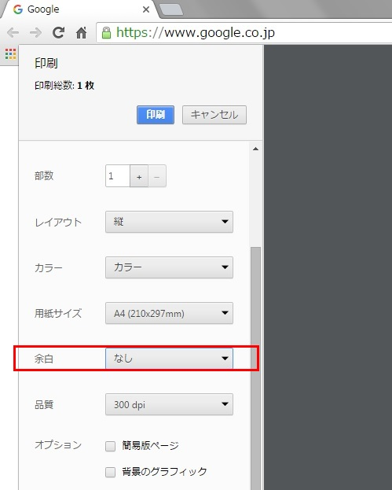
前のページに戻る
【Chromeの場合】
◇Chromeブラウザーでアクセスしたとき、アドレスバーに赤色斜線と警告画面出てしまいます。その場合の対策手順を下記に記述します。
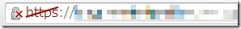
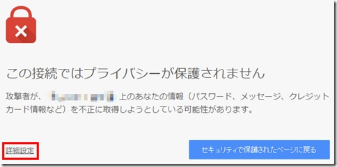
◇SSL証明書の取得
Chromeを起動し、URLに「ftp://spd.kdu.ac.jp」を指定してください。下記の画面が表示されます。
cat.crt をクリックしてください。
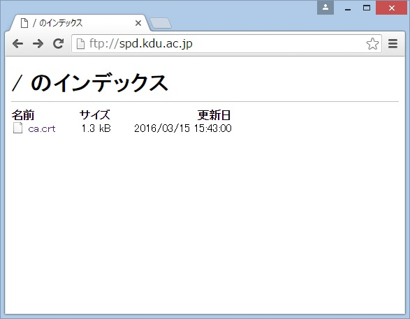
下記が表示されます。
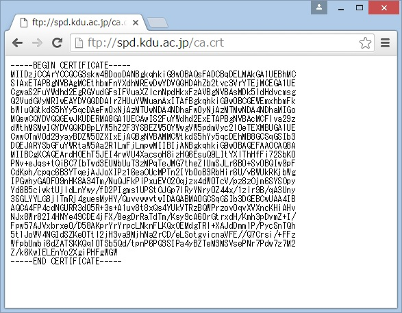
表示内容を選択し、コピー保存してください。
その後、テキストエディター（メモ帳など）を起動し、コピーした内容を貼り付けてください。
ファイル名を「ca.crt」とし、管理しやすい場所（ドキュメント配下とか）に保存してください。
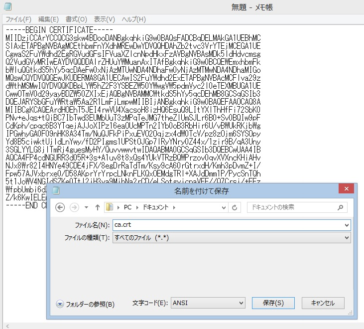
◇SSL証明書のインポート
Chromeを起動し、メニューから設定を選びます。
設定画面の下の方に「詳細設定を表示・・・」という文字があるのでこれをクリックします。
「HTTPS/SSL」という項目が出てきて「証明書を管理・・・」というボタンがありますので、これをクリックします。
証明書管理画面が表示されます。この画面で「インポート」をクリックします。
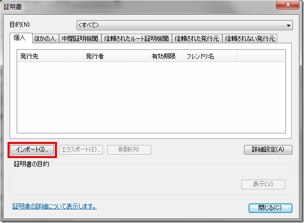
証明書インポートウィザードが表示されますので、「次へ」をクリックします。
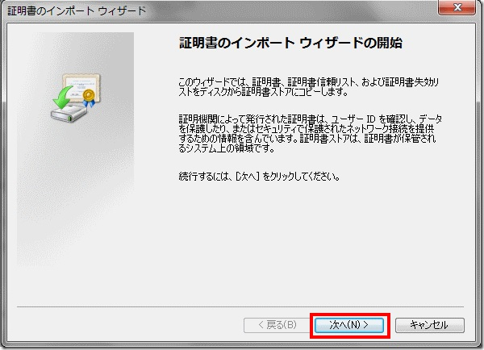
証明書のファイルを指定（上記のca.crtファイル）し、「次へ」をクリックします。
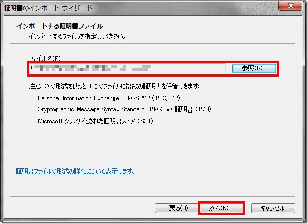
次の「証明ストア」の選択画面ではいったん「参照」をクリックします。
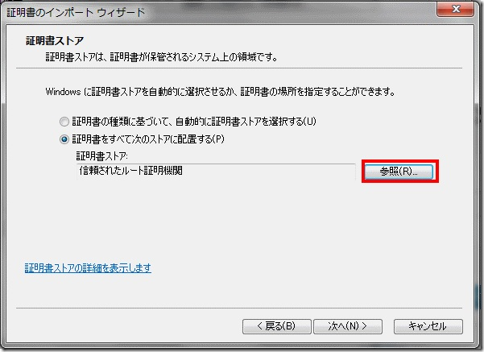
表示された画面で「信頼されたルート証明機関」を選んで「OK」をクリックします。先ほどの画面に戻ったら、「次へ」をクリックします。
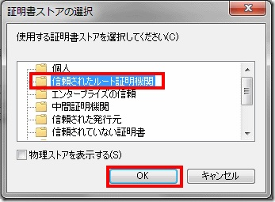
選択された内容が表示されるので、確認して「完了」をクリックします。
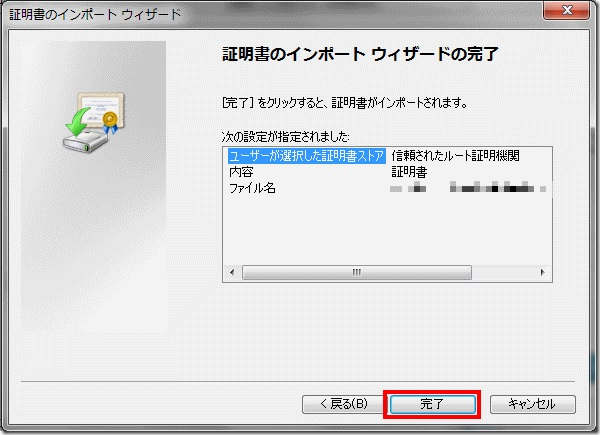
セキュリティ警告画面が表示されますが、「はい」をクリックします。
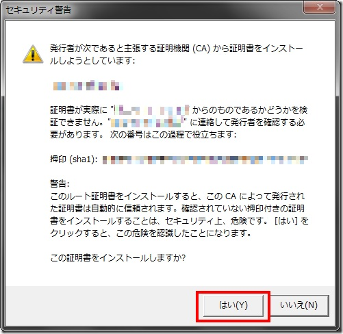
完了画面が表示されますので、「OK」をクリックし完了です。
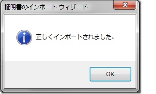
アドレスバーの表示もhttpsに斜線が入らずちゃんと緑色で表示されます。
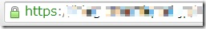
前のページに戻る